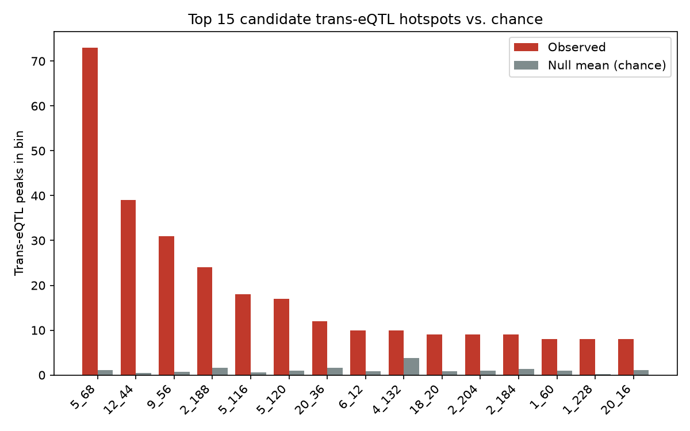
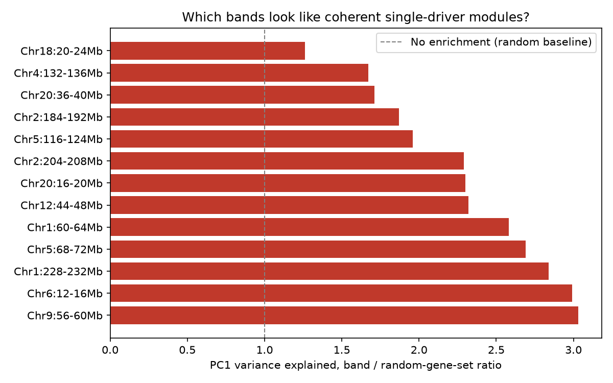
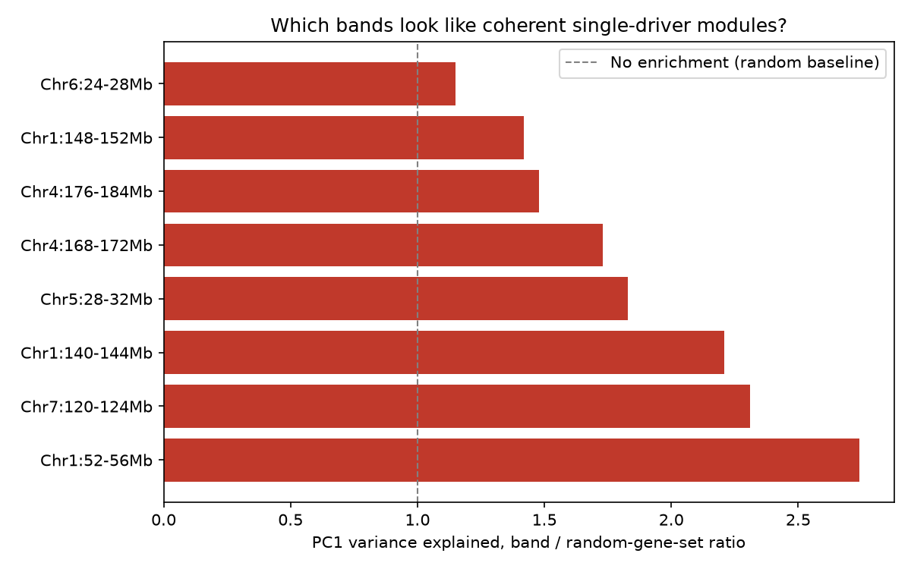

Abstract
Study summary — background, methods, results and conclusion.
Background: Trans-eQTL hotspots influence the expression of many distal genes and offer a route to master regulators of complex traits, but they are prone to artifacts: uneven marker density inflating false hotspot calls, cis-effects miscategorized as trans, and co-expression confounds masquerading as coordinated regulation. We mapped cis- and trans-eQTLs in adipose and liver from 436 outbred Heterogeneous Stock (HS) rats to identify and validate candidate trans-regulatory hotspots.
Methods: Cis/trans classification used genotype-derived linkage disequilibrium (r2 ≥ 0.6), with an explicit exclusion zone to prevent self-hit leakage. Hotspots were called via marker-density-weighted permutation testing (5,000 permutations) on well-annotated, significant (−log10 P ≥ 5.5) trans peaks. Each candidate hotspot was validated by testing whether its target genes’ dominant co-expression axis (PC1) correlated with a local candidate driver’s own expression.
Results: Thirteen candidate hotspots were identified per tissue; five in adipose and one in liver met stringent gene-count and coherence thresholds. The strongest adipose hotspot (Chr5:68–72 Mb, ~73–74 genes, 2.7-fold coherence enrichment over random) is anchored by Tmem245 (r = 0.81 with the module’s dominant axis) and regulates Plag1, a cross-species pleiotropic regulator of body size and metabolic traits, and Bmal1, the core circadian clock gene. In liver, a single dominant hotspot (Chr4:176–184 Mb, 55 genes) precisely reproduces the mevalonate/cholesterol biosynthesis regulon (Cyp51, Hmgcs1, Sqle, Fdps, Fdft1); notably, neither known master regulator (Srebf1, Srebf2) resides at this locus, leaving its causal driver unresolved by current annotation.
Conclusion: This tissue-specific hotspot catalog provides an artifact-resistant discovery template and a prioritized target list — adipose Chr5:68–72 Mb and liver Chr4:176–184 Mb — for pangenome-based structural variant fine-mapping to resolve causal drivers not explained by conventional gene-centric annotations.
Overview
Headline numbers and the two strongest hotspots.
A candidate circadian–metabolic hub
Chr5:68–72 Mb regulates a large, coherent module. The local gene Tmem245 tracks the module’s first principal component with r = 0.81, and downstream targets include Plag1 (body-size/metabolism regulator) and Bmal1 (circadian clock). Purity checks for self-hit leakage, method disagreement and weak LD support were all clean.
Top target genes in Chr5:68–72 Mb
| Gene | Role / description | −logP |
|---|---|---|
| Spats1 | spermatogenesis associated, serine-rich 1 | 8.0 |
| Elp4 | elongator acetyltransferase complex subunit 4 | 7.6 |
| Pou2f1 | POU class 2 homeobox 1 | 7.3 |
| Plag1 | PLAG1 zinc finger | 7.1 |
| Bmal1 | basic helix-loop-helix ARNT like 1 | 7.0 |
A textbook cholesterol regulon, missing driver
Chr4:176–184 Mb regulates 55 genes that are almost entirely the cholesterol/mevalonate biosynthesis pathway. Neither Srebf1 nor Srebf2 — the usual transcriptional masters of this pathway — sits nearby. This makes the locus a prime candidate for pangenome/SV fine-mapping.
| Gene | Role | −logP |
|---|---|---|
| Cyp51 | Cytochrome P450, family 51 | 8.6 |
| Hmgcs1 | HMG-CoA synthase | 8.5 |
| Sqle | Squalene epoxidase | 8.4 |
| Fdps | Farnesyl diphosphate synthase | 7.2 |
| Fdft1 | Farnesyl diphosphate transferase | 7.0 |
| Msmo1 | Methylsterol monooxygenase | 7.1 |
Objectives & analysis logic
Five connected questions, the methods that answer them, and the key results. Click any objective to expand.
- Step 1 classifies every peak as cis or trans, keeping the full table.
- Step 2 keeps only well-annotated genes (drops LOC/RIKEN/Gm/pseudogene/EST accessions).
- Step 3 all downstream analyses operate on the well-annotated subset: trans-band detection uses
--well-annotated-only, driver searches require a well-annotated local cis gene, and the GO/KEGG universe is built from the same well-annotated gene list.
1 Separate local (cis) from distal (trans) regulation
Question: Which peaks act near the gene they regulate, and which act from afar?
Method: LD-based cis interval (r² ≥ 0.6, ±5 Mb) using real genotype calls; a fixed 10 Mb window is kept as a sanity check.
Result: Adipose 1,463 cis / 32,191 trans; Liver 1,058 cis / 32,596 trans.
2 Discover trans-eQTL hotspots (trans-bands)
Question: Do trans peaks cluster more than expected by chance?
Method: 4 Mb bins, marker-density permutation null, 10 Mb self-hit exclusion, adjacent bins merged.
Result: 13 merged bands per tissue.
3 Propose candidate driver genes
Question: Which gene inside a band could explain the distal signal?
Method: Top local well-annotated cis gene by −logP, plus PC1 co-expression coherence.
Result: Adipose top module driver Tmem245 (r=0.81); liver strongest candidate Rassf8 (−logP 19.5).
4 Interpret bands biologically (GO/KEGG)
Question: Do band genes belong to coherent pathways?
Method: g:Profiler over-representation against the same well-annotated gene universe.
Result: Adipose Chr5:68–72 Mb is enriched for RNA/transcription regulation (14 terms). Liver Chr4:176–184 Mb points to steroid biosynthesis.
5 Motivate pangenomics as the next step
Question: Could hidden structural or haplotypic variation explain bands SNP data cannot?
Reasoning: LD intervals and drivers are conditioned on SNP genotypes. Missing SVs, indels and reference bias can create apparently trans hotspots.
Next step: Build/borrow a rat pangenome, call SVs, re-QTL with graph-aware genotypes.
Cis vs. trans classification
How every peak was labelled local or distal, and why the call is independent of statistical significance.
The method: LD-based, not a flat window
For each peak the lead marker is found and r² is measured against every marker within 5 Mb. The cis interval is the contiguous stretch where r² stays ≥ 0.6 — a data-driven boundary rather than an arbitrary cutoff. A fixed 10 Mb window is kept for comparison.
| Method | Cis | Trans | Cis −logP (median) |
|---|---|---|---|
| Fixed 10 Mb window | 4,318 | 29,336 | 7.9 |
| LD-based (r²≥0.6) | 1,463 | 32,191 | 9.1 |
Adipose example: ~8.5% of peaks change classification between methods because true LD blocks are usually narrower than a flat window assumes.

Adipose Confirmed trans-band hotspots
13 candidate bands survived marker-density permutation testing. Bar length = number of regulated genes.
Chr5:68–72 Mb — the strongest, cleanest signal
~73–74 well-annotated genes; PC1 explains ~65% of the module’s variance versus ~24% for a random gene set — a ~2.7× enrichment. The module is anchored by Tmem245 (r = 0.81 with PC1), even though the strongest local cis gene by −logP is Slc44a1 (−logP 6.6).
Correlation with candidate driver / key targets
Top target genes
| Gene | Role / description | −logP |
|---|---|---|
| Spats1 | spermatogenesis associated, serine-rich 1 | 8.0 |
| Elp4 | elongator acetyltransferase complex subunit 4 | 7.6 |
| Pou2f1 | POU class 2 homeobox 1 | 7.3 |
| Plag1 | PLAG1 zinc finger | 7.1 |
| Bmal1 | basic helix-loop-helix ARNT like 1 | 7.0 |
Why this reads as a real regulatory module
A high shared-variance score can mean either a genuine master regulator or a co-expression artifact. The deciding test is whether the local candidate driver’s own expression explains that shared signal. Here, it does — strongly.

Adipose trans-bands summary table
Click column headers to sort. “No local cis candidate” means no well-annotated local cis gene passed the driver threshold in that band.
| Band | Genes | PC1 % | Random PC1 % | PC1 ratio | Mean |r| | Top cis candidate | Cis −logP |
|---|
Liver Confirmed trans-band hotspots
Same pipeline applied independently. Only one band clears the high-confidence tier.
Chr4:176–184 Mb — the cholesterol biosynthesis regulon
All top targets are sequential enzymes in the mevalonate/cholesterol pathway. The local candidates Rassf8 (−logP 19.5) and Etfrf1 (−logP 19.0) have no established link to cholesterol regulation.

Liver trans-bands summary table
Click column headers to sort. “No local cis candidate” means no well-annotated local cis gene passed the driver threshold in that band.
| Band | Genes | PC1 % | Random PC1 % | PC1 ratio | Mean |r| | Top cis candidate | Cis −logP |
|---|
Candidate driver genes
What the pipeline found and what the literature says about each. Click the PubMed / GeneCards links under each card to verify claims.
No established pathway role; the statistical case (module r=0.81, ~73 regulated genes) is doing the work. Top expression correlate of the adipose circadian–metabolic module.
Novel candidateCausally confirmed pleiotropic regulator of body size, growth and metabolic traits across cattle, sheep, goats, pigs and horses. Knockout mice show growth retardation.
Well establishedCore circadian clock gene (Arntl). Adipose circadian–metabolic crosstalk makes its co-regulation with Plag1 a coherent story rather than a coincidence.
Well establishedLXR-regulated enzyme at the interface of lipid metabolism and innate immune signaling (cGAS-STING pathway) — directly relevant to metabolic inflammation.
Well establishedER-membrane calcium-signalling regulator, characterised mainly in bone and airway immune contexts. Adipose relevance is plausible but speculative.
Open questionC2H2 zinc-finger transcription factor. Only computational annotation available (DNA binding, transcriptional regulation); no characterised biological role.
Novel candidateSmall GTPase controlling regulated secretory vesicle trafficking, best characterised in neurons and neuroendocrine cells. An adipokine-secretion role would be extrapolation.
Open questionFunctional enrichment (GO / KEGG)
Over-representation tested against the same well-annotated gene universe used to call the bands.
Adipose Chr5:68–72 Mb — 14 significant terms
Best term: regulation of RNA metabolic process (adj. p = 1.55×10⁻⁵).
This band reads as a transcriptional/regulatory hub. The presence of Bmal1, Cry1, Npas2, Plag1 and Pou2f1 among enriched genes is consistent with circadian and transcription-factor-driven regulation.
Liver Chr4:176–184 Mb — KEGG steroid biosynthesis
Best term: Steroid biosynthesis (adj. p = 7.59×10⁻⁴).
Six genes — Cyp51, Dhcr7, Fdft1, Msmo1, Sqle, Tm7sf2 — map to the cholesterol/steroid synthetic pathway, a liver-relevant trait.
Power considerations
With a ~7,300-gene universe, small bands need very high pathway overlap to survive correction for testing thousands of terms. The table below summarises the empirical power tiers used in this report.
| Band size | Overlapping genes needed | Fraction of band | Tier |
|---|---|---|---|
| 8 | 4 | 50% | underpowered |
| 10 | 5 | 50% | marginal |
| 20 | 6 | 30% | marginal |
| 30 | 6 | 20% | reliable |
| 74 (Chr5:68–72) | 9 | 12% | reliable |
Enrichment summary table
Click column headers to sort.
| Tissue | Band | Genes | Power tier | Significant terms | Best adj. p | Top term |
|---|
Next step: pangenomics & hidden drivers
Why a single-reference SNP panel may miss the true causal variant, and what to do about it.
Structural variation
Large SVs can alter expression of many distal genes from a single locus and can sit under a SNP-defined band without being tagged by any lead SNP.
Reference bias
A single reference genome collapses divergent haplotypes. A true regulatory variant may be invisible if the reference is a poor match to HS alleles.
LD tagging failure
If the causal allele is an indel or SV, the best SNP proxy may have low or unstable r², weakening cis calls and inflating apparent trans signals.
Haplotype-resolved effects
Two founder haplotypes can carry different variant combinations. A pangenome lets us test the haplotype as the unit of effect rather than each SNP in isolation.
Proposed way forward
- Integrate founder strain assemblies or a rat pangenome to obtain SV and indel calls in the HS population.
- Re-run the cis/trans classifier with SVs included as additional markers; check whether any trans-band collapses into a single SV association.
- Test band genes against local pangenome haplotypes at the band locus, not just the lead SNP.
- Phase short variants and SVs jointly with graph-genotype imputation, raising the chance the true causal driver is among tested markers.
Interactive plot gallery
Pre-generated Plotly figures. Click any thumbnail to open the full interactive figure in a new tab.
Genome-wide views
Per-band zoom plots — Adipose
Per-band zoom plots — Liver
Supplementary gene lists
Downloadable gene lists for the top adipose and liver trans-bands, ready for literature review.
Chr5:68–72 Mb — 73 target genes
The full list of genes whose trans-eQTL peaks fall inside the top adipose band, sorted by peak −logP.
Download CSV Open interactive table →Chr4:176–184 Mb — 55 target genes
The full list of genes whose trans-eQTL peaks fall inside the top liver band, sorted by peak −logP.
Download CSV Open interactive table →04_*_transbands_all_significant_peaks.csv by filtering peaks to the reported band coordinates. Each row gives the gene symbol, description, peak −logP, effect size, peak location, and the gene’s own genomic location.
Methods snapshot & references
The validation chain in order, and the literature behind the design choices.
- Step 02 — Cis/trans call: LD-based r² ≥ 0.6 interval around each peak lead marker; applied to all peaks so nothing is lost before filtering.
- Step 03 — Well-annotated filter: Drops LOC/RIKEN/Gm/pseudogene/EST-clone entries; all subsequent analyses use this filtered set.
- Step 04 — Trans-bands: Restricted to well-annotated trans peaks with Peak −logP ≥ 5.5; 4 Mb bins, marker-density-weighted permutation (5,000 shuffles), empirical p-values, adjacent-bin merging, plus 10 Mb self-hit exclusion zone.
- Step 06 — Diagnostics: PCA on z-scored expression, matched-size random baseline, top local cis candidate restricted to well-annotated genes inside the band.
- Step 07 — Enrichment: g:Profiler, organism rnorvegicus, sources GO:BP/CC/MF + KEGG, g:SCS multiple-testing correction; universe = well-annotated genes from step 03 with 4 ≤ −logP ≤ 80.
References
- Peirce et al. (2006) Mammalian Genome — cis/trans calling and multiple testing in eQTL mapping.
- Alberts et al. (2007) PLoS ONE — why arbitrary cis windows produce false cis calls.
- Breitling et al. (2008) PLoS Genetics — genetical genomics hotspots.
- Mozhui et al. (2008) PLoS Genetics — co-expression vs. true trans-regulatory hotspots.
- Churchill & Doerge (1994) Genetics — permutation thresholds in QTL mapping.
- Kolberg et al. (2023) Nucleic Acids Research — g:Profiler/g:SCS.
- Reimand et al. (2019) Nature Protocols — gene-list size and enrichment power.